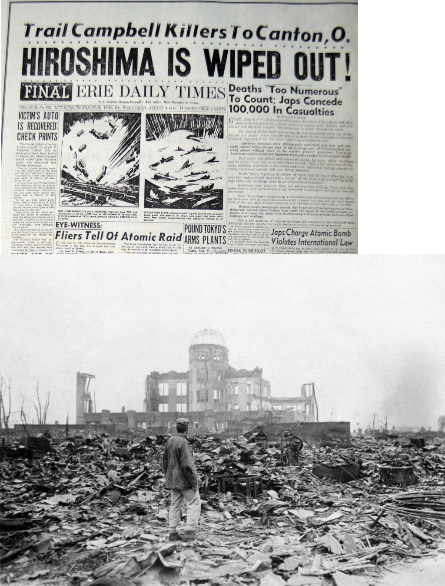

pengeboman hiroshima
Pada tanggal 6 Agustus 1945, selama Perang Dunia II, pembom B-29 Amerika menjatuhkan bom atom pertama di dunia yang dinamakan Little Boy di atas kota Hiroshima, Jepang. Ledakan tersebut langsung menewaskan sekitar 80.000 orang dan puluhan ribu lainnya juga meninggal kemudian karena paparan radiasi.
Lanjut